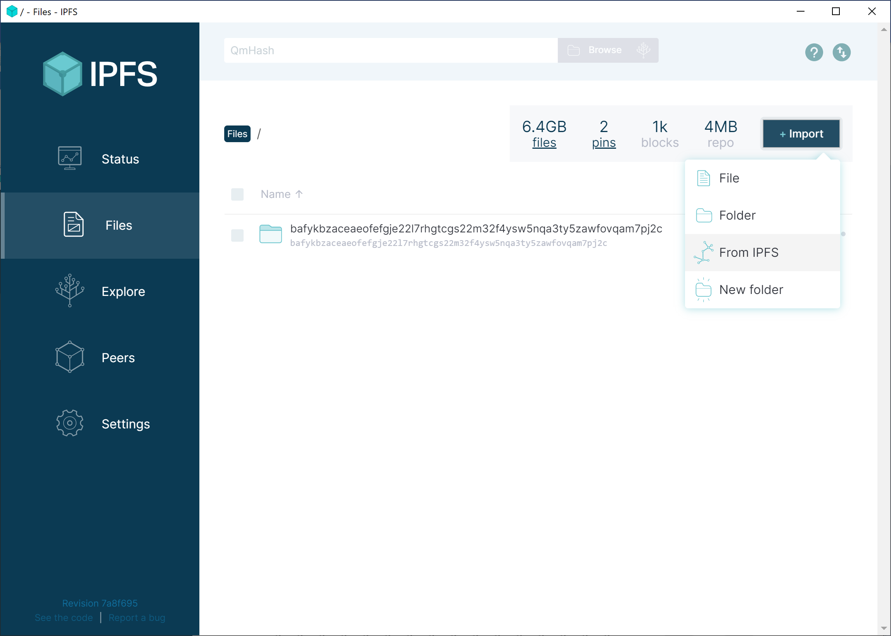

IPFS Free Library
IPFS is here. IPFS is a de-centralized file and webhosting protocol founded on ideals of freedom and openness. The Library Genesis collection is live on IPFS as of today, accessible via libgen.rs and libgen.fun. IPFS is like BitTorrent but has a single global swarm, and it's accessible on the web. You can learn about the IPFS project from IPFS.io or Wikipedia.
IPFS is the next technical revolution in peer-to-peer networking, allowing people like you to share books with readers who request them. IPFS is the next best weapon in the fight against domain take-downs and internet censorship.
We can now each become a founding shelf for a free, global library. Let's start.
Get started
IPFS is simple. Hosts (you) Pin files (books) using Content Identifiers (CID Hashes) to share them on the IPFS network. CID Hashes can represent individual files or an entire folder. Pinning saves the files to your local computer so you can share them, and others can Pin them from you.
Each CID Hash for Library Genesis represents 1,000 books, or about 5 gigabytes of local file storage. 100 pins = 100,000 books! Who ever told you that you couldn't start your own library?
Copyright warning
Before you begin, make sure you understand the legal implications of hosting and sharing copyrighted material.
Installing IPFS
Are you a power-user or run a server? Jump to the section on getting started with Docker.
If you're not, just install the IPFS Desktop client. Make sure to read the desktop system requirements.
Desktop client
System requirements
Note that IPFS Desktop client is an alpha-stage software still in development. The command line version of the software for servers/home servers is more mature.
- Requires internet serice provider with unlimited bandwidth. Do not install IPFS if you have a monthly bandwidth or data cap.
- Recommended at least 16GB RAM and Intel i5 or equivalent processor
- Recommended at least 100 mbps, gigabit connection preferred
- Recommended port forwarding
Get started
Pin your first CID Hash
Click Files > Import > From IPFS
Then copy and paste in your first CID Hash containing 1,000 books (about 6GB). Once it's complete, jump to the CID Hash index.
bafykbzaceaeofefgje22l7rhgtcgs22m32f4ysw5nqa3ty5zawfovqam7pj2c

Docker for servers
Previously downloaded the Library Genesis torrents for the Library Genesis Seeding Project? Follow these steps then jump to torrents.
System requirements
- Docker (docker.com/get-docker)
- Requires internet serice provider with unlimited bandwidth. Do not install IPFS if you have a monthly bandwidth or data cap.
- Requires between 10GB or more of hard-drive space. For more information refer to the CID Hash index with file sizes.
- Recommended at least 16GB RAM and Intel i5 or equivalent processor
- Recommended at least 100 mbps, gigabit connection preferred
- Recommended port forwarding
Get started
Create your docker container
You can more documentation for the Go-based IPFS Docker container at Docker Hub..
/export will store your downloaded files, while the books from pinned CID Hashes will be located in /ipfs/data/blocks.
docker run -d \
--name go-ipfs \
-v $HOME/ipfs/export:/export \
-v $HOME/ipfs/data:/data/ipfs \
-p 4001:4001 \
-p 127.0.0.1:8080:8080 \
-p 127.0.0.1:5001:5001 \
ipfs/go-ipfs:latest
docker start go-ipfs
Pin your first CID Hash
This 'docker exec' command runs your 'go-ipfs' container with container command 'ipfs pin add'. This CID Hash contains 1,000 books, to add it run:
docker exec go-ipfs ipfs pin add bafykbzaceaeofefgje22l7rhgtcgs22m32f4ysw5nqa3ty5zawfovqam7pj2c --progress
Once it's complete, jump to the CID Hash index.
You can also access the WebUI and add or manage pins from there. Port 5001 is the API port of the IPFS docker container and contains the same UI as IPFS desktop. You can access the webui in your browser at http://127.0.0.1:5001/webui.
CID Hash index
Once you've pinned your first 1,000 you can add the next 100,000 books of the Library Genesis Scitech collection here:
Port forwarding
The IPFS swarm peer port is 4001. Opening it up will help you connect, but it is optional if you can't do so. To learn how to port forward port 4001 search your router model + port forward.
Torrents
Many volunteers have helped seed the torrents with the Library Genesis Seeding Project.
If you already downloaded the torrents you can add torrent folders to IPFS using ipfs add
Start go-ipfs normally with docker start go-ipfs
Configure go-ipfs to allow you link folders to the Filestore:
docker exec go-ipfs ipfs config --json Experimental.FilestoreEnabled true
Restart with docker stop go-ipfs && docker start go-ipfs
Add the folders from where you saved them, starting with folder 1000:
docker exec go-ipfs ipfs add $home/books/1000/ -r -w --nocopy --hash=blake2b-256 >> $home/books/ipfs-add.log
Watch the log and check out the network activity:
docker exec go-ipfs tail -f $home/books/ipfs-add.log
docker exec go-ipfs ipfs stats bw --poll=true --interval=1s